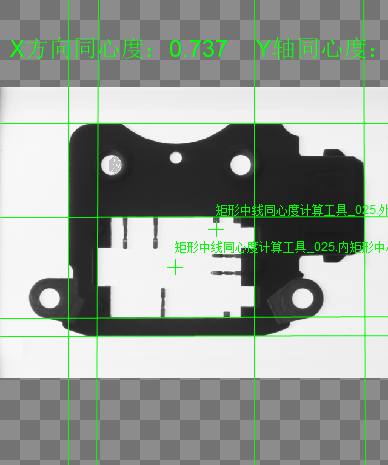

通过外矩形的四条边以及内矩形的四条边分别计算出外矩形的中心点以及内矩形的中心点，并通过这两个中心点计算出同心度。

常应用于矩形内外框合规性检测。
同心度X = (外矩形同心度的X坐标) – (内矩形同心度的X坐标)；
同心度Y = (外矩形同心度的Y坐标) – (内矩形同心度的Y坐标)；
同心度=
同心度上限、同心度下限
对于输出参数同心度的有效范围进行设定，距离值上限、距离值下限的可取值范围为[0, 999999.999999]，另可设置为"–.——“,表示对同心度上限或下限不进行限定。
使用距离值上限或/和距离值下限对同心度数值的有效范围进行设定后，执行此测量工具。
当输出结果同心度在设定的有效范围内时，显示工具执行成功；否则，显示工具执行失败。
同心度X上限、同心度X下限
针对同心度X有效范围限定，可取值范围为[-999999.999999, 999999.999999]
其他与同心度上/下限原理及设置方式相同。
同心度Y上限、同心度Y下限
针对同心度Y有效范围限定，可取值范围为[-999999.999999, 999999.999999]
其他与同心度上/下限原理及设置方式相同。
| 现象描述 |
|---|
| 输入可以是找线工具的线段结果，输出的同心度结果是double类型。 |
| 参数名称 | 参数说明 |
|---|---|
| 外矩形上边 | 外边框矩形的上边。 |
| 外矩形右边 | 外边框矩形的右边。 |
| 外矩形下边 | 外边框矩形的下边。 |
| 外矩形左边 | 外边框矩形的左边。 |
| 内矩形上边 | 内边框矩形的上边。 |
| 内矩形右边 | 内边框矩形的右边。 |
| 内矩形下边 | 内边框矩形的下边。 |
| 内矩形左边 | 内边框矩形的左边。 |
| 像素当量 | 图片上一个像素代表实际尺寸的大小（mm/px）。 |
| 同心度X上限 | 取值范围[-999999.999999,999999.999999]，输出参数同心度X的上限阈值。 |
| 同心度X下限 | 取值范围[-999999.999999,999999.999999]，输出参数同心度X的下限阈值。 |
| 同心度Y上限 | 取值范围[-999999.999999,999999.999999]，输出参数同心度Y的上限阈值。 |
| 同心度Y下限 | 取值范围[-999999.999999,999999.999999]，输出参数同心度Y的下限阈值。 |
| 同心度上限 | 取值范围[0,999999.999999]，输出参数同心度的上限阈值。 |
| 同心度下限 | 取值范围[0,999999.999999]，输出参数同心度的下限阈值。 |
| 高级界面 | 无 |
| 参数名称 | 参数说明 |
|---|---|
| 外矩形垂直中线 | 过外边框矩形的中心点并且平行于外矩形左边线或右边线的直线。 |
| 外矩形水平中线 | 过外边框矩形的中心点并且平行于外矩形上边线或下边线的直线。 |
| 内矩形垂直中线 | 过内边框矩形的中心点并且平行于内矩形左边线或右边线的直线。 |
| 内矩形水平中线 | 过内边框矩形的中心点并且平行于内矩形上边线或下边线的直线。 |
| 同心度X | 外矩形中心点与内矩形中心点在X轴方向上的距离偏差。 |
| 同心度Y | 外矩形中心点与内矩形中心点在Y轴方向上的距离偏差。 |
| 同心度 | 外矩形中心点与内矩形中心点的距离偏差。 |
| 外矩形中心点 | 外边框矩形的中心点。 |
| 内矩形中心点 | 内边框矩形的中心点。 |
| 执行结果 | 工具执行结果。 |
| 执行时间 | 工具执行时间。 |
参见“\Samples\同心度计算.gvp”。